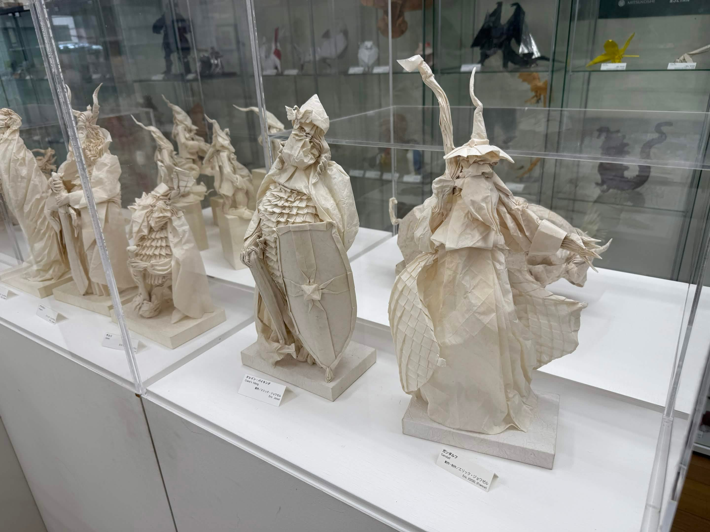
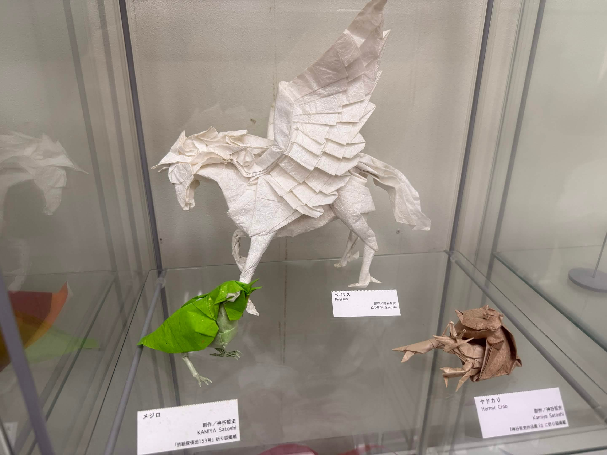
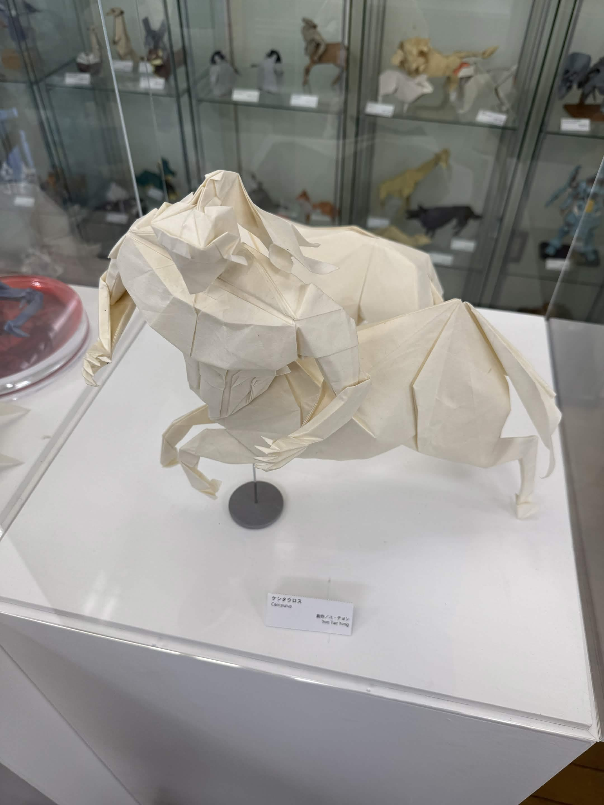
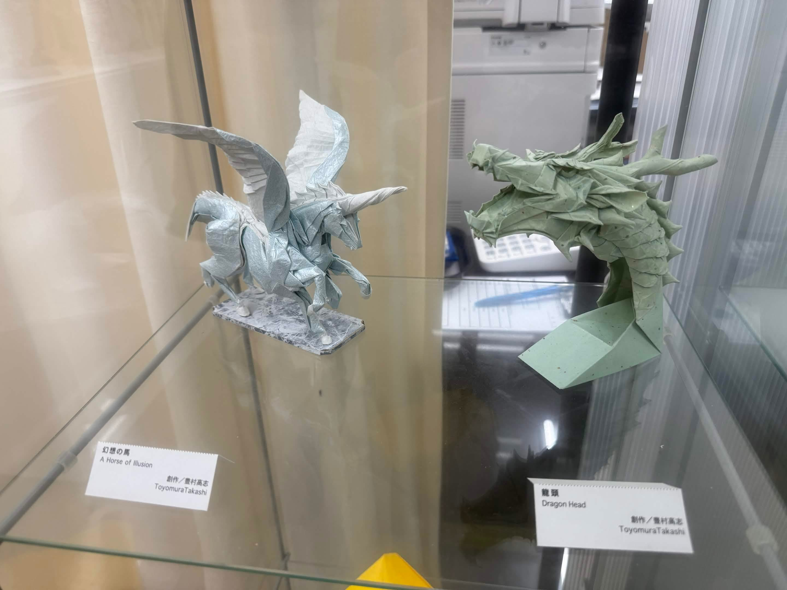
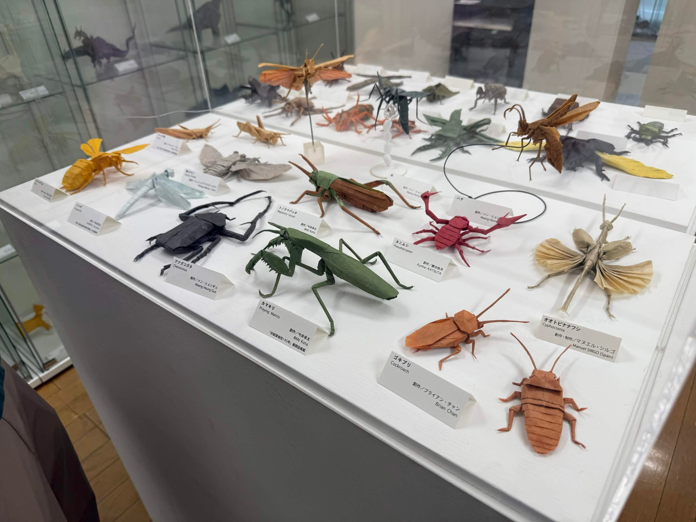

小学校以来、私は折り紙が好きです。折り紙は、地味な一枚の紙を面白い作品に変えることができるアートからです。
去年の夏せっかく日本に行ったから、日本の折り紙を経験してみたかったです。私の友達と一緒に「折り紙ハウス」という所に行きました。
私はまだ日本語を勉強しているので、日本人と日本語を話すのは少しはずかしいです。でも、私の友達は日本人ですから、はずかしい気持ちを感じないで済みました。
その部屋は折り紙の作品でいっぱいで全部ガラスの中にきれいに表示されていました。それを見て感動しました。折り紙は作って置いておくだけじゃないです。このように表示して残すこともできるのがわかりました。





1 / 2
確かに、簡単にそんなことはできません。でも、毎週少しずつがんばってみれば、すぐに私の部屋も折り紙でいっぱいになるかもしれません。